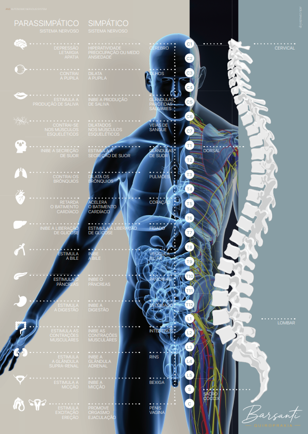
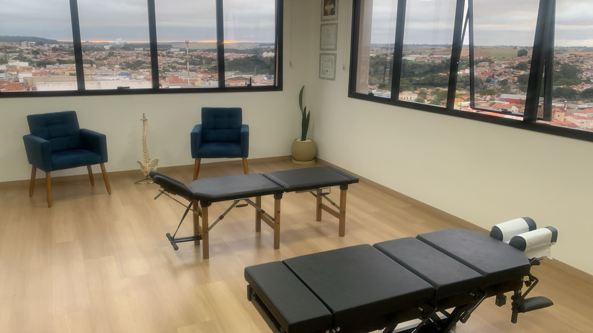

Quiropraxista Especialista em Saúde da Coluna e Bem-Estar
Agende sua ConsultaOlá! Sou o Felipe Barsanti, quiropraxista e profissional da saúde focado na coluna vertebral e no sistema nervoso.
Embora muitos associem a quiropraxia apenas às dores nas costas, ela vai além disso. Meu trabalho busca promover melhor funcionamento do corpo, mais saúde, equilíbrio e qualidade de vida.
Formação e Certificações
Treinamentos
A Quiropraxia é uma área da saúde que atua na prevenção e tratamento de disfunções do sistema neuromusculoesquelético.
Seu objetivo é corrigir desalinhamentos da coluna e promover o equilíbrio do corpo, melhorando a qualidade de vida.

Tratamento eficaz para dores nas costas, pescoço, hérnia de disco e dores ciáticas sem uso de remédios.
Melhora o alinhamento corporal, reduzindo tensões musculares provocadas pelo dia a dia e más posturas.
Redução da frequência e intensidade de dores de cabeça causadas por tensão cervical e estresse.
Aumenta a amplitude de movimento das articulações e otimiza o desempenho em atividades físicas.
Manutenção periódica para evitar o desgaste precoce de articulações e o surgimento de novas dores no futuro.
Ao aliviar a tensão muscular e articular, o corpo relaxa, promovendo maior sensação de bem-estar geral.

(15) 997828-8981
Rua Aristides Lobo, 224 - Sala 1004
CEP 18200-185
Larizzate Office,
Centro - Itapetininga-SP